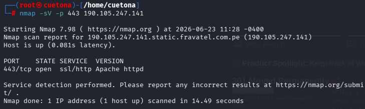
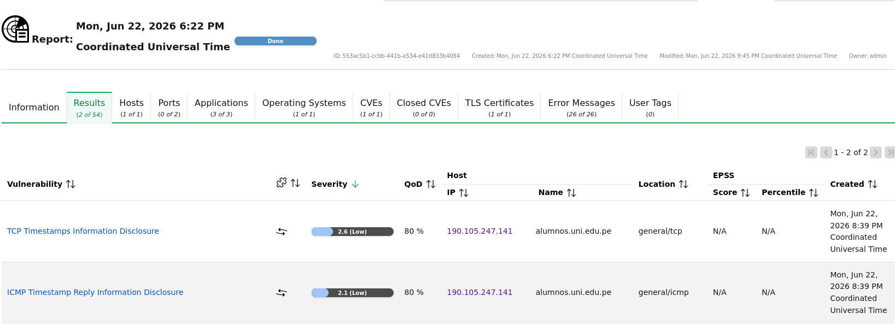
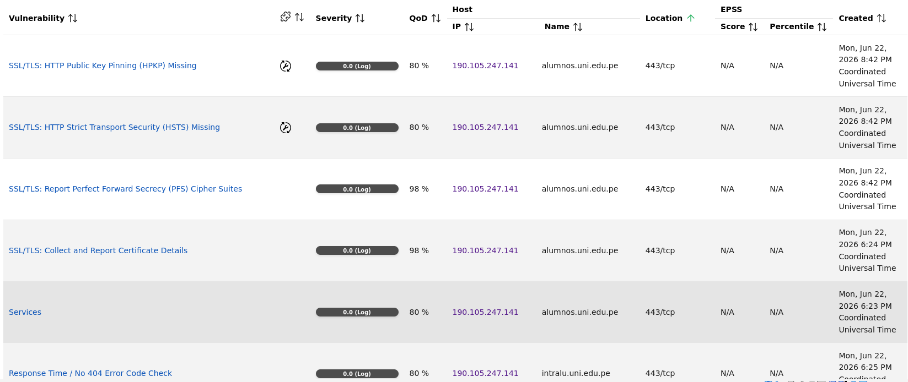

Auditoría Integral Purple Team: Gestión de Vulnerabilidades e Ingeniería de Detección
Este laboratorio práctico ha sido diseñado bajo una metodología híbrida de seguridad (Purple Team) para evaluar de forma exhaustiva la superficie de ataque y la resiliencia del dominio gubernamental/académico alumnos.uni.edu.pe (IP: 190.105.247.141). La auditoría abarca de manera secuencial desde la recolección de inteligencia pasiva basada en fuentes abiertas (OSINT) hasta el análisis activo de vulnerabilidades, permitiendo correlacionar vectores de exposición tecnológica reales con controles de monitoreo en Centros de Operaciones de Seguridad (SOC).
El núcleo ofensivo del proyecto consistió en automatizar la identificación de fallos de configuración y software desactualizado mediante el motor empresarial Greenbone OpenVAS, utilizando un perfil de escaneo optimizado (Full and Fast) adaptado a las capacidades físicas del entorno virtual. Paralelamente, la fase defensiva complementa el ciclo validando la integridad del tráfico criptográfico con Wireshark y desplegando un Sistema de Detección de Intrusos (IDS) con Snort, demostrando una visibilidad de 360 grados sobre cómo las actividades de reconocimiento dejan firmas detectables en los firewalls y perímetros de red corporativos.
Cuadro de Mando del Proyecto (Cybersecurity Framework)
| Fase de la Auditoría | Herramienta Principal | Tipo de Enfoque | Resultado / Entregable |
|---|---|---|---|
| 1. Reconocimiento Pasivo | Shodan (OSINT) | Pasivo (No intrusivo) | Mapeo de banners y exposición superficial. |
| 2. Escaneo de Puertos y Servicios | Nmap | Activo (Intrusivo) | Confirmación de puerto 443/TCP abierto (Apache). |
| 3. Gestión de Vulnerabilidades | Greenbone OpenVAS | Activo (Intrusivo) | Detección de 2 fallos de severidad Baja (2.6 Low). |
| 4. Análisis de Protocolos | Wireshark | Inspección de Paquetes | Captura y análisis del Handshake SSL/TLS (.pcapng). |
| 5. Ingeniería de Detección | Snort (IDS) | Defensivo (Blue Team) | Creación de reglas de alerta ante escaneos ruidosos. |
Fase 1: OSINT con Shodan
Inteligencia pasiva basada en exposición pública de servicios sin interacción directa con la red objetivo.
🧠 Superficie de Ataque (Reconocimiento Pasivo)
Se realizó una consulta en Shodan sobre el host
alumnos.uni.edu.pe, obteniendo información indexada sin generar tráfico directo hacia el objetivo.
📡 Metadatos Detectados
- IP:
190.105.247.141 - HTTP:
301 Moved Permanently - Servidor:
Apache - ISP:
Fravatel EIRL - Ubicación: Lima, Perú 🇵🇪
- Content-Type:
text/html; charset=iso-8859-1

💻 Fase 2: Escaneo Activo de Puertos y Servicios con Nmap
Interacción directa con el host objetivo para mapear el perímetro, validar servicios y detectar versiones en tiempo real.
🧠 Metodología de Enumeración Progresiva
Tras el análisis pasivo con Shodan, se ejecutó un escaneo activo en dos fases técnicas para identificar superficie de ataque.
⚡ Etapa 2.1: Descubrimiento de Puertos Abiertos
$ nmap -sV -F 190.105.247.141
 📡 Evidencia 2.1: Barrido rápido (-F)
📡 Evidencia 2.1: Barrido rápido (-F)
Resultado: Puertos 80/tcp y 443/tcp abiertos con servicio
Apache httpd.
🔍 Etapa 2.2: Inspección de Servicio HTTPS
$ nmap -sV -p 443 190.105.247.141

📡 Evidencia 2.2: Análisis dirigido puerto 443
Resultado: Confirmación de 443/tcp con servicio
ssl/http Apache httpd y latencia estable (~0.081s).
🛡 FASE 3: GESTIÓN DE VULNERABILIDADES (OPENVAS)
Auditoría basada en CVE/CVSS para análisis de impacto y exposición del sistema
📡 Activos e Infraestructura
| IP | 190.105.247.141 |
| Hostname | alumnos.uni.edu.pe |
| SO | Linux Kernel (QoD 100%) |
| HTTPS | No puertos abiertos |
| TLS | VÁLIDO |
| Vulns | 2 |
| Criticidad | LOW |
🚨 Vulnerabilidades Detectadas
TCP Timestamp Disclosure
CVSS 2.6Exposición de timestamps TCP que permite fingerprinting del sistema.
ICMP Timestamp Reply
CVSS 2.1El sistema responde ICMP Timestamp Request exponiendo información temporal.
Reconocimiento y Enumeración
- HTTPS 443 detectado (Apache httpd)
- Certificado SSL/TLS obtenido
- Protocolos ALPN / NPN activos
- Apache HTTP Server identificado
- Linux Kernel fingerprint (QoD 100%)
- Dominios múltiples en certificado:
• alumnos.uni.edu.pe
• docentes.uni.edu.pe
• dirce.uni.edu.pe
Evidencia 3.1: Cuadro de Mando

Evidencia 3.2: Firmas y OID

Fase 4: Ingeniería de Detección Perimetral con Snort IDS
Configuración de reglas en el Sistema de Detección de Intrusos para alertar en tiempo real ante actividades ruidosas.
Monitoreo en Entorno SOC (Blue Team)
Para contrarrestar el ruido generado por los escaneos de Nmap y OpenVAS, se desplegaron firmas personalizadas en local.rules que alertan al instante ante picos anómalos de tráfico SYN o peticiones ICMP Timestamp, cerrando con éxito el flujo defensivo del laboratorio.